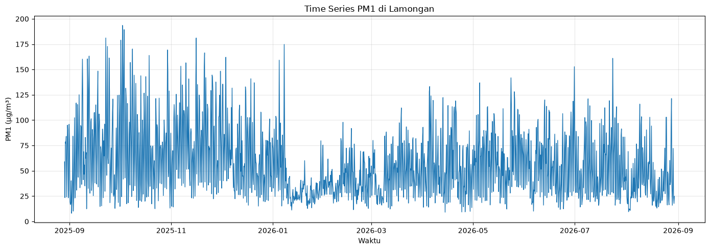
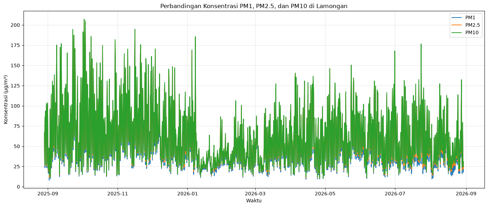

import pandas as pd
import matplotlib.pyplot as plt
# ============================================================
# 1. LOAD DATA
# ============================================================
file = "../data/data_lamongan_clean.csv"
df = pd.read_csv(file)
df["valid_time"] = pd.to_datetime(df["valid_time"])
print("=" * 60)
print("DATA UNDERSTANDING - KUALITAS UDARA LAMONGAN")
print("=" * 60)
# ============================================================
# 2. INFORMASI DATA
# ============================================================
print("\n[1] INFORMASI DATA")
print("-" * 60)
print("Jumlah baris :", len(df))
print("Jumlah kolom :", len(df.columns))
print("\nKolom:")
for col in df.columns:
print("-", col)
print("\nPeriode data:")
print("Mulai :", df["valid_time"].min())
print("Selesai:", df["valid_time"].max())
# ============================================================
# 3. TIPE DATA
# ============================================================
print("\n[2] TIPE DATA")
print("-" * 60)
print(df.dtypes)
# ============================================================
# 4. DESKRIPSI STATISTIK
# ============================================================
pollutants = [
"pm1_ug_m3",
"pm2p5_ug_m3",
"pm10_ug_m3"
]
print("\n[3] STATISTIK DESKRIPTIF")
print("-" * 60)
print(df[pollutants].describe())
# ============================================================
# 5. MISSING VALUE
# ============================================================
print("\n[4] MISSING VALUE")
print("-" * 60)
print(df.isnull().sum())
# ============================================================
# 6. DUPLIKAT
# ============================================================
print("\n[5] DATA DUPLIKAT")
print("-" * 60)
print("Jumlah duplikat:", df.duplicated().sum())
print(
"Duplikat waktu:",
df["valid_time"].duplicated().sum()
)
# ============================================================
# 7. NILAI NEGATIF
# ============================================================
print("\n[6] NILAI NEGATIF")
print("-" * 60)
for col in pollutants:
jumlah = (df[col] < 0).sum()
print(f"{col}: {jumlah}")
# ============================================================
# 8. NILAI MINIMUM DAN MAKSIMUM
# ============================================================
print("\n[7] MINIMUM DAN MAKSIMUM")
print("-" * 60)
for col in pollutants:
print(f"\n{col}")
print("Minimum:", df[col].min())
print("Maksimum:", df[col].max())
# ============================================================
# 9. OUTLIER MENGGUNAKAN IQR
# ============================================================
print("\n[8] DETEKSI OUTLIER")
print("-" * 60)
for col in pollutants:
Q1 = df[col].quantile(0.25)
Q3 = df[col].quantile(0.75)
IQR = Q3 - Q1
lower = Q1 - 1.5 * IQR
upper = Q3 + 1.5 * IQR
outliers = df[
(df[col] < lower) |
(df[col] > upper)
]
print(f"\n{col}")
print("Batas bawah :", lower)
print("Batas atas :", upper)
print("Jumlah outlier:", len(outliers))
# ============================================================
# 10. GRAFIK TIME SERIES
# ============================================================
plt.figure(figsize=(14, 6))
plt.plot(
df["valid_time"],
df["pm1_ug_m3"],
label="PM1"
)
plt.plot(
df["valid_time"],
df["pm2p5_ug_m3"],
label="PM2.5"
)
plt.plot(
df["valid_time"],
df["pm10_ug_m3"],
label="PM10"
)
plt.title(
"Time Series Konsentrasi Partikulat Udara "
"di Lamongan"
)
plt.xlabel("Waktu")
plt.ylabel("Konsentrasi (µg/m³)")
plt.legend()
plt.grid(True)
plt.tight_layout()
plt.show()
# ============================================================
# 11. RATA-RATA POLUTAN
# ============================================================
print("\n[9] RATA-RATA POLUTAN")
print("-" * 60)
for col in pollutants:
print(
f"{col}: "
f"{df[col].mean():.2f} µg/m³"
)
print("\n" + "=" * 60)
print("ANALISIS SELESAI")
print("=" * 60)
============================================================
DATA UNDERSTANDING - KUALITAS UDARA LAMONGAN
============================================================
[1] INFORMASI DATA
------------------------------------------------------------
Jumlah baris : 1464
Jumlah kolom : 6
Kolom:
- valid_time
- latitude
- longitude
- pm1_ug_m3
- pm2p5_ug_m3
- pm10_ug_m3
Periode data:
Mulai : 2025-08-29 00:00:00
Selesai: 2026-08-29 18:00:00
[2] TIPE DATA
------------------------------------------------------------
valid_time datetime64[us]
latitude float64
longitude float64
pm1_ug_m3 float64
pm2p5_ug_m3 float64
pm10_ug_m3 float64
dtype: object
[3] STATISTIK DESKRIPTIF
------------------------------------------------------------
pm1_ug_m3 pm2p5_ug_m3 pm10_ug_m3
count 1464.000000 1464.000000 1464.000000
mean 57.529129 62.028295 63.610400
std 33.978961 35.869201 36.420732
min 8.039837 10.248062 10.406658
25% 29.858387 33.187166 34.235181
50% 50.123969 53.588804 54.827098
75% 78.797543 84.655286 86.409060
max 193.527740 204.640230 207.295210
[4] MISSING VALUE
------------------------------------------------------------
valid_time 0
latitude 0
longitude 0
pm1_ug_m3 0
pm2p5_ug_m3 0
pm10_ug_m3 0
dtype: int64
[5] DATA DUPLIKAT
------------------------------------------------------------
Jumlah duplikat: 0
Duplikat waktu: 0
[6] NILAI NEGATIF
------------------------------------------------------------
pm1_ug_m3: 0
pm2p5_ug_m3: 0
pm10_ug_m3: 0
[7] MINIMUM DAN MAKSIMUM
------------------------------------------------------------
pm1_ug_m3
Minimum: 8.039837
Maksimum: 193.52774
pm2p5_ug_m3
Minimum: 10.248062
Maksimum: 204.64023
pm10_ug_m3
Minimum: 10.406658
Maksimum: 207.29521
[8] DETEKSI OUTLIER
------------------------------------------------------------
pm1_ug_m3
Batas bawah : -43.55034687500001
Batas atas : 152.20627612500002
Jumlah outlier: 22
pm2p5_ug_m3
Batas bawah : -44.01501275000002
Batas atas : 161.85746525000002
Jumlah outlier: 22
pm10_ug_m3
Batas bawah : -44.0256375
Batas atas : 164.66987849999998
Jumlah outlier: 22
[9] RATA-RATA POLUTAN
------------------------------------------------------------
pm1_ug_m3: 57.53 µg/m³
pm2p5_ug_m3: 62.03 µg/m³
pm10_ug_m3: 63.61 µg/m³
============================================================
ANALISIS SELESAI
============================================================
import pandas as pd
import matplotlib.pyplot as plt
# Membaca data hasil cleaning
df = pd.read_csv("../data/data_lamongan_clean.csv")
df["valid_time"] = pd.to_datetime(df["valid_time"])
# Urutkan berdasarkan waktu
df = df.sort_values("valid_time")
# ============================================================
# TIME SERIES PM1
# ============================================================
plt.figure(figsize=(14, 5))
plt.plot(
df["valid_time"],
df["pm1_ug_m3"],
linewidth=1
)
plt.title("Time Series PM1 di Lamongan")
plt.xlabel("Waktu")
plt.ylabel("PM1 (µg/m³)")
plt.grid(True, alpha=0.3)
plt.tight_layout()
plt.show()
# ============================================================
# TIME SERIES PM2.5
# ============================================================
plt.figure(figsize=(14, 5))
plt.plot(
df["valid_time"],
df["pm2p5_ug_m3"],
linewidth=1
)
plt.title("Time Series PM2.5 di Lamongan")
plt.xlabel("Waktu")
plt.ylabel("PM2.5 (µg/m³)")
plt.grid(True, alpha=0.3)
plt.tight_layout()
plt.show()
# ============================================================
# TIME SERIES PM10
# ============================================================
plt.figure(figsize=(14, 5))
plt.plot(
df["valid_time"],
df["pm10_ug_m3"],
linewidth=1
)
plt.title("Time Series PM10 di Lamongan")
plt.xlabel("Waktu")
plt.ylabel("PM10 (µg/m³)")
plt.grid(True, alpha=0.3)
plt.tight_layout()
plt.show()
# ============================================================
# PERBANDINGAN SEMUA POLUTAN
# ============================================================
plt.figure(figsize=(14, 6))
plt.plot(
df["valid_time"],
df["pm1_ug_m3"],
label="PM1"
)
plt.plot(
df["valid_time"],
df["pm2p5_ug_m3"],
label="PM2.5"
)
plt.plot(
df["valid_time"],
df["pm10_ug_m3"],
label="PM10"
)
plt.title("Perbandingan Konsentrasi PM1, PM2.5, dan PM10 di Lamongan")
plt.xlabel("Waktu")
plt.ylabel("Konsentrasi (µg/m³)")
plt.legend()
plt.grid(True, alpha=0.3)
plt.tight_layout()
plt.show()


Cek missing value
# ============================================================
# [3] CEK MISSING VALUE
# ============================================================
print("\n[3] MISSING VALUE")
print("-" * 60)
missing = df.isnull().sum()
print(missing)
print("\nPersentase missing value:")
print((df.isnull().mean() * 100).round(2))
[3] MISSING VALUE
------------------------------------------------------------
valid_time 0
latitude 0
longitude 0
pm1_ug_m3 0
pm2p5_ug_m3 0
pm10_ug_m3 0
dtype: int64
Persentase missing value:
valid_time 0.0
latitude 0.0
longitude 0.0
pm1_ug_m3 0.0
pm2p5_ug_m3 0.0
pm10_ug_m3 0.0
dtype: float64
Cek nilai negatif
# ============================================================
# [4] CEK NILAI NEGATIF
# ============================================================
print("\n[4] NILAI NEGATIF")
print("-" * 60)
pm_columns = [
"pm1_ug_m3",
"pm2p5_ug_m3",
"pm10_ug_m3"
]
for col in pm_columns:
negatif = (df[col] < 0).sum()
print(f"{col}: {negatif} nilai negatif")
[4] NILAI NEGATIF
------------------------------------------------------------
pm1_ug_m3: 0 nilai negatif
pm2p5_ug_m3: 0 nilai negatif
pm10_ug_m3: 0 nilai negatif
negative_data = df[
(df["pm1_ug_m3"] < 0) |
(df["pm2p5_ug_m3"] < 0) |
(df["pm10_ug_m3"] < 0)
]
print("\nData dengan nilai negatif:")
display(negative_data)
Data dengan nilai negatif:
| valid_time | latitude | longitude | pm1_ug_m3 | pm2p5_ug_m3 | pm10_ug_m3 |
|---|
Statistik deskriptif
# ============================================================
# [5] STATISTIK DESKRIPTIF
# ============================================================
print("\n[5] STATISTIK DESKRIPTIF")
print("-" * 60)
display(df[pm_columns].describe().T)
[5] STATISTIK DESKRIPTIF
------------------------------------------------------------
| count | mean | std | min | 25% | 50% | 75% | max | |
|---|---|---|---|---|---|---|---|---|
| pm1_ug_m3 | 1464.0 | 57.529129 | 33.978961 | 8.039837 | 29.858387 | 50.123969 | 78.797543 | 193.52774 |
| pm2p5_ug_m3 | 1464.0 | 62.028295 | 35.869201 | 10.248062 | 33.187166 | 53.588804 | 84.655286 | 204.64023 |
| pm10_ug_m3 | 1464.0 | 63.610400 | 36.420732 | 10.406658 | 34.235181 | 54.827098 | 86.409060 | 207.29521 |
Cek hubungan PM1, PM2.5 dan PM10
# ============================================================
# [6] KORELASI ANTAR POLUTAN
# ============================================================
print("\n[6] KORELASI ANTAR POLUTAN")
print("-" * 60)
correlation = df[pm_columns].corr()
display(correlation)
[6] KORELASI ANTAR POLUTAN
------------------------------------------------------------
| pm1_ug_m3 | pm2p5_ug_m3 | pm10_ug_m3 | |
|---|---|---|---|
| pm1_ug_m3 | 1.000000 | 0.999372 | 0.997694 |
| pm2p5_ug_m3 | 0.999372 | 1.000000 | 0.999435 |
| pm10_ug_m3 | 0.997694 | 0.999435 | 1.000000 |
Buat grafik awal
# ============================================================
# [7] TIME SERIES PM
# ============================================================
import matplotlib.pyplot as plt
plt.figure(figsize=(15, 6))
plt.plot(
df["valid_time"],
df["pm1_ug_m3"],
label="PM1"
)
plt.plot(
df["valid_time"],
df["pm2p5_ug_m3"],
label="PM2.5"
)
plt.plot(
df["valid_time"],
df["pm10_ug_m3"],
label="PM10"
)
plt.xlabel("Waktu")
plt.ylabel("Konsentrasi (µg/m³)")
plt.title("Time Series Konsentrasi Partikulat Udara di Lamongan")
plt.legend()
plt.grid(True, alpha=0.3)
plt.tight_layout()
plt.show()
Kesimpulan Data Understanding#
Berdasarkan eksplorasi awal terhadap dataset kualitas udara di wilayah Lamongan, diperoleh sebanyak 1.464 baris data dengan 6 kolom. Data memiliki periode pengamatan dari 29 Agustus 2025 sampai 29 Agustus 2026.
Variabel utama yang dianalisis adalah konsentrasi partikulat PM1, PM2.5, dan PM10. Ketiga variabel tersebut memiliki satuan µg/m³ setelah dilakukan konversi dari satuan asli kg/m³.
Dataset juga memiliki informasi waktu pengamatan berupa valid_time serta koordinat lokasi berupa latitude dan longitude.
Hasil pemeriksaan kualitas data menunjukkan adanya beberapa nilai yang perlu diperiksa lebih lanjut, terutama nilai partikulat negatif dan sejumlah data yang teridentifikasi sebagai outlier. Nilai negatif secara logis tidak merepresentasikan konsentrasi partikulat sebenarnya sehingga perlu ditangani pada tahap data preparation/cleaning.
Eksplorasi statistik deskriptif dan korelasi dilakukan untuk memahami karakteristik serta hubungan antarvariabel partikulat. Selanjutnya, data akan dipersiapkan dan dibersihkan sebelum digunakan untuk analisis dan visualisasi time series.